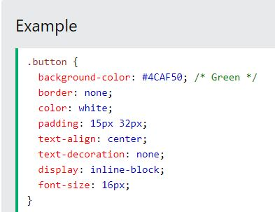

| "tables" | To specify table borders in CSS, use the border properties. These include "boder", "boder-collapse", "width", and "heigh". |
| Selectors "id,class,!important" | CSS selectors are used to "find" (or select) the HTML elements you want to style. We can divide CSS selectors into five categories: Simple selectors (select elements based on name, id, class) Combinator selectors (select elements based on a specific relationship between them) Pseudo-class selectors (select elements based on a certain state) Pseudo-elements selectors (select and style a part of an element) Attribute selectors (select elements based on an attribute or attribute value) |
| align | "text-align" - bottom,center,right,left,top |
| font | "font-family" any standard font can be used. Not all fonts are supported by every website. |
| Combinators | Combinators are used when selecting based on descendant or adjacency There are four different combinators in CSS: descendant selector (space) child selector (>) adjacent sibling selector (+) general sibling selector (~) |
| transitions | To create a transition effect, you must specify two things: the CSS property you want to add an effect to the duration of the effect Note: If the duration part is not specified, the transition will have no effect, because the default value is 0. The following example shows a 100px * 100px red "div" element. The "div" element has also specified a transition effect for the width property, with a duration of 2 seconds: |
| gradient | To create a linear gradient you must define at least two color stops. Color stops are the colors you want to render smooth transitions among. You can also set a starting point and a direction (or an angle) along with the gradient effect. Syntax background-image: linear-gradient(direction, color-stop1, color-stop2, ...); |
| links |
|
| navigation bar |  |
| float | The float property is used for positioning and formatting content e.g. let an image float left to the text in a container. The float property can have one of the following values: left - The element floats to the left of its container right - The element floats to the right of its container none - The element does not float (will be displayed just where it occurs in the text). This is default inherit - The element inherits the float value of its parent In its simplest use, the float property can be used to wrap text around images. |
| animations |
What are CSS Animations?
|